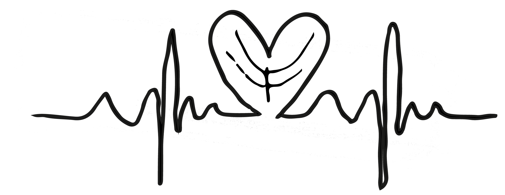

De meeste mensen zijn wel eens bang voor een grote spin of een heftige onweersbui. Bij foliorumfusia zijn de mensen bang van bladeren. Als je echter constant een grote angst hebt voor vallende bladeren of situaties waarin bladeren aan te pas komen dan kan het zijn dat je leidt aan foliorumfusia.
Deze angststoornis kan vastgesteld worden door verschillende actoren. Als je angst of paniek voelt opkomen bij een confrontatie met bladeren of bij de gedachte ervan, kan je stellen dat je aan foliorumfusia leidt.
Wanneer je aan jouw fobie wordt blootgesteld, kun je last hebben van onder andere hartkloppingen, overmatig zweten en pijn op de borst. Wanneer je angst hebt voor bladeren is het zo dat je hartslag lager wordt, je bloeddruk daalt en het kan gebeuren dat je flauwvalt.
Mensen die aan foliorumfusia leiden, proberen situaties of bladeren die bij hen angst oproepen te vermijden. Deze fobie zorgt dan ook voor een belemmering in hun dagelijks leven. Deze mensen zullen bijvoorbeeld vaker binnen blijven of durven hun fobie aan niemand te vertellen.
Foliorumfusia is echter goed te behandelen. Het is belangrijk om hulp te zoeken en je fobie te behandelen. Deze fobie is makkelijk te behandelen door erover te praten met lotgeloten. Bekijk onze agenda en kijk wanneer er een bijeenkomst plaatsvindt. 